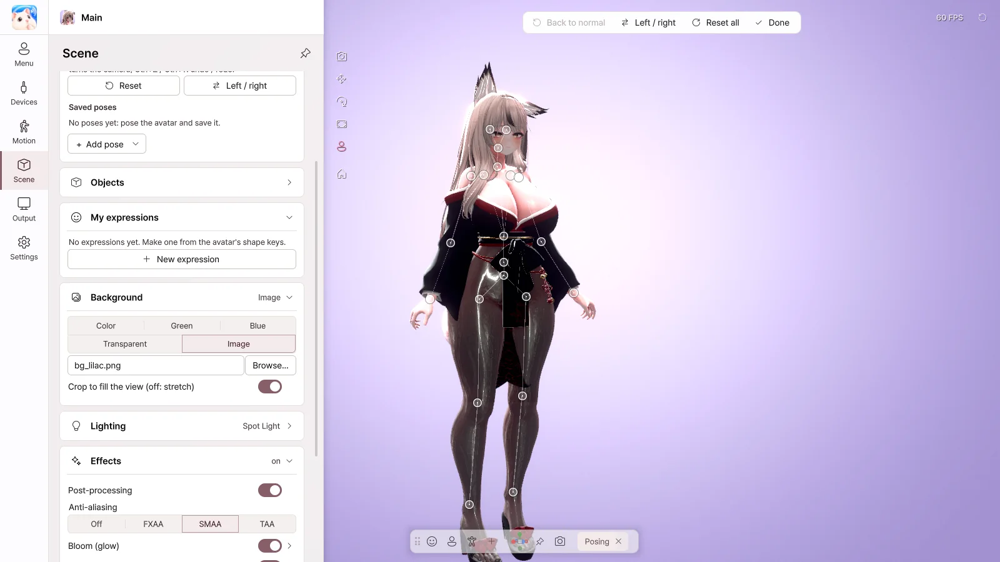
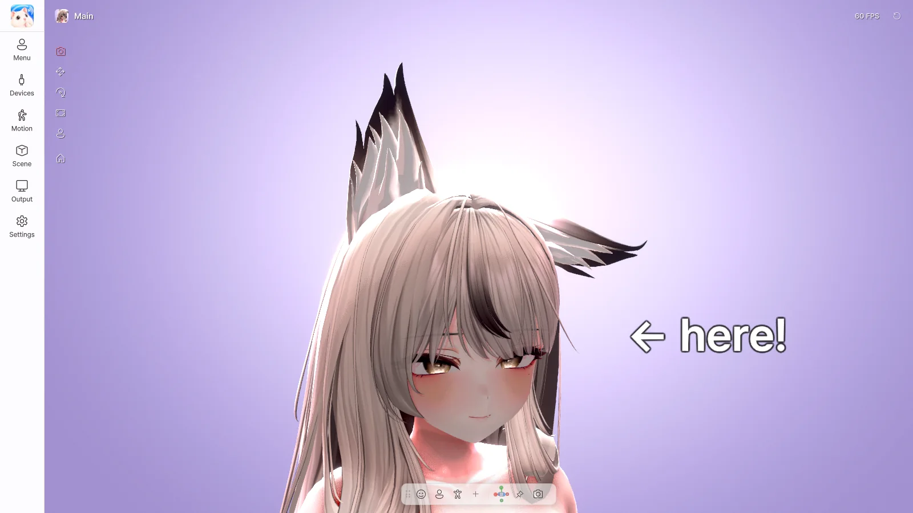

11. Posing · Objects · Expressions
| Feature | Edition |
|---|---|
| Posing | Pro |
| Objects | Pro |
| More screen share sources | Pro |
| My expressions | Basic · Pro |
| Automatic expressions | Basic · Pro |
Posing

Turn on Scene › Posing › Posing mode to create a pose by moving the bones directly.
- Click a bone to select it, and drag to move it. Drag a hand or foot, and the whole arm or leg follows.
- Drag a ring to rotate.
- Left / right — Flip the left and right sides of the pose, or copy one side to the other.
- Save it with + Add pose › Save this pose, and turn it on right away from the Poses card in the avatar menu.
- You can also load
.animfiles made in Unity.
Please save your pose before you turn off posing mode.
Objects

Use Scene › Objects › + Add object to place text, images, shapes and 3D models.
- Set Rides on to the head or a hand, and the object moves with the avatar.
- Double-click text to edit it right there.
- For 3D models, create a
.vpropfile with Curious Bobby → Prop Exporter in Unity.
More screen share sources
You can layer more windows or monitors onto your screen share. Use this when you'd like to show a chat window or a music player as well.
My expressions
Create your own expressions from the avatar's shape keys.
- Click New expression.
- Search for shape keys, add them with +, and adjust their strength.
- Click Save, and you can turn the expression on from the My expressions card in the avatar menu.
Automatic expressions
When you smile or look surprised, an expression you've chosen appears automatically. Turn it on in Motion › Automatic expressions, and link an expression to show for each one, such as smile · surprise · wink.